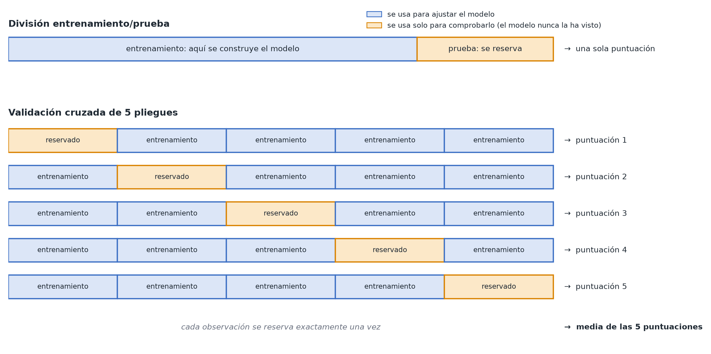

Validación cruzada y revisión del modelo
En pocas palabras: la forma fiable de saber si un modelo predictivo es bueno es comprobar su rendimiento con datos que no ha visto.
Por qué engaña comprobar el ajuste con los mismos datos con los que construiste el modelo
El rendimiento de un modelo sobre los mismos datos que se usaron para construirlo (su "ajuste de entrenamiento") siempre parece al menos tan bueno como su verdadera capacidad de generalizar, y a menudo mucho mejor, sobre todo en modelos flexibles que pueden sobreajustarse (véase Sobreajuste y regularización). Presentar el rendimiento de entrenamiento como si indicara cómo se comportará el modelo en el mundo real es uno de los errores más comunes del modelado aplicado.
La solución: reservar una parte de los datos
- División entrenamiento/prueba (train/test split): aparta una porción de los datos (p. ej., el 25%) que el modelo no ve mientras se construye y comprueba el rendimiento únicamente en esa porción reservada.
- Validación cruzada (cross-validation): una versión que aprovecha mejor los datos. Divide los datos en varios "pliegues" (folds), entrena repetidamente con todos los pliegues menos uno y evalúa con el pliegue que queda fuera, y después promedia el rendimiento de todas las divisiones. Así cada dato se usa tanto para entrenar como para evaluar (aunque nunca a la vez), algo importante cuando los datos son escasos.

Qué significa "rendimiento" depende de la variable de respuesta
- Variable de respuesta continua (colesterol LDL en mmol/L): RMSE (el error de predicción típico, en las propias unidades de la variable de respuesta) o R² (fracción de la variación explicada).
- Variable de respuesta sí/no (sobrevive o no): AUC (lo bien que el modelo ordena los casos positivos frente a los negativos) o exactitud (accuracy).
Cómo se relaciona esto con la distinción entre predicción y causalidad
La validación cruzada es la forma adecuada de juzgar un modelo predictivo (módulo 5): mide directamente lo que te interesa, la generalización a datos nuevos. No es la forma adecuada de juzgar si una estimación causal es correcta: un modelo puede predecir de maravilla con datos reservados y, aun así, estimar muy mal el efecto causal de una variable concreta si no ha tenido en cuenta adecuadamente la confusión (véase Diagramas causales). Un buen rendimiento predictivo y una estimación causal válida son objetivos distintos, que se comprueban de formas distintas.